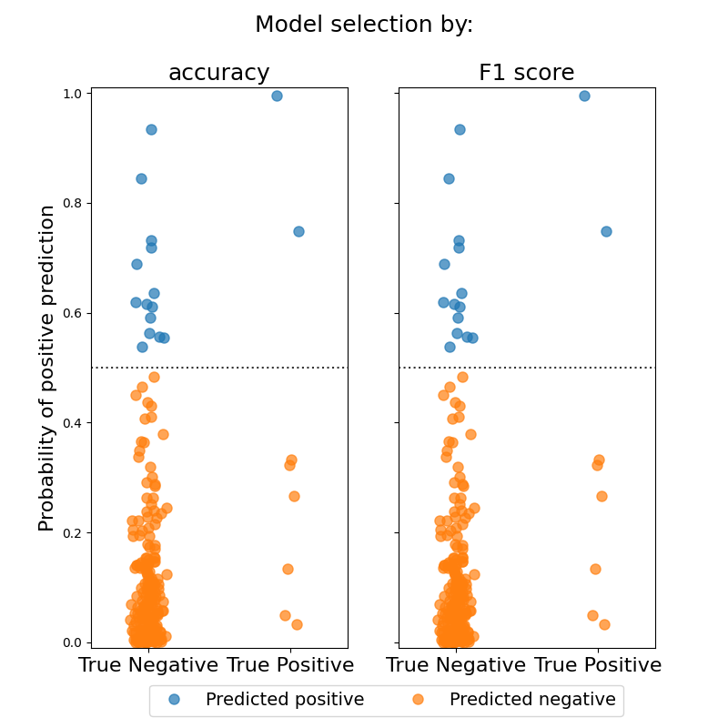

Note
Click here to download the full example code
Specifying a scoring criterion for model selection
Estimates a Sparse Group Lasso logistic regression model on a simulated sparse signal with highly imbalanced data. Model hyperparameters are chosen through cross-validation. The first model uses default parameters and chooses hyperparameters to maximize accuracy, while the second model uses F1 score to choose hyperparameters. The model chosen through F1 scoring shows a modest increase in both F1 score and accuracy.
Out:
Model Metric Score
-----------------------------------
default accuracy 0.924
F1 accuracy 0.916
default F1 score 0.095
F1 F1 score 0.160
default balanced accuracy 0.529
F1 balanced accuracy 0.573
import numpy as np
from matplotlib import pyplot as plt
from groupyr import LogisticSGLCV
from groupyr.datasets import make_group_classification
from sklearn.model_selection import train_test_split
from sklearn.metrics import accuracy_score, balanced_accuracy_score, f1_score
X, y, groups, idx = make_group_classification(
n_samples=1000,
n_groups=20,
n_informative_groups=3,
n_features_per_group=20,
n_informative_per_group=15,
n_redundant_per_group=0,
n_repeated_per_group=0,
n_classes=2,
scale=100,
useful_indices=True,
random_state=1729,
weights=[0.97, 0.03],
)
# Here we split the data into train and test splits
# In order to inflate the effect of choosing the F1 score for cross-validation,
# we neglect to stratify the train/test split.
# In practice, we would want to provide the ``stratify=y`` parameter.
X_train, X_test, y_train, y_test = train_test_split(X, y)
# Common keyword arguments
kwargs = dict(groups=groups, l1_ratio=0.5, n_alphas=40, tol=1e-2, cv=3, random_state=0)
# Train a model with default scoring (i.e. accuracy)
default_model = LogisticSGLCV(**kwargs).fit(X_train, y_train)
# And a model with F1 scoring
f1_model = LogisticSGLCV(scoring="f1", **kwargs).fit(X_train, y_train)
# The model selected using F1 score performs better than the one selected using accuracy.
header = "{model:10s}{metric:20s}{score:5s}"
row = "{model:10s}{metric:20s}{score:5.3f}"
print(header.format(model="Model", metric="Metric", score="Score"))
print("-" * len(header.format(model="", metric="", score="")))
print(
row.format(
model="default",
metric="accuracy",
score=accuracy_score(y_test, default_model.predict(X_test)),
)
)
print(
row.format(
model="F1",
metric="accuracy",
score=accuracy_score(y_test, f1_model.predict(X_test)),
)
)
print()
print(
row.format(
model="default",
metric="F1 score",
score=f1_score(y_test, default_model.predict(X_test)),
)
)
print(
row.format(
model="F1", metric="F1 score", score=f1_score(y_test, f1_model.predict(X_test))
)
)
print()
print(
row.format(
model="default",
metric="balanced accuracy",
score=balanced_accuracy_score(y_test, default_model.predict(X_test)),
)
)
print(
row.format(
model="F1",
metric="balanced accuracy",
score=balanced_accuracy_score(y_test, f1_model.predict(X_test)),
)
)
# Plot the classification probabilities for the different models
default_probs = default_model.predict_proba(X_test)[:, 1]
f1_probs = f1_model.predict_proba(X_test)[:, 1]
jitter = np.random.normal(loc=0.0, scale=0.05, size=f1_probs.shape)
colors = plt.get_cmap("tab10").colors
fig, axes = plt.subplots(1, 2, figsize=(8, 8), sharey=True)
for mask, show_label in zip(
[y_test.astype(bool), np.logical_not(y_test)], [True, False]
):
for prediction, ax in zip([default_probs, f1_probs], axes):
pred_pos = prediction[mask] > 0.5
pred_neg = np.logical_not(pred_pos)
_ = ax.plot(
y_test[mask][pred_pos] + jitter[mask][pred_pos],
prediction[mask][pred_pos],
"o",
ms=8,
color=colors[0],
alpha=0.7,
label="Predicted positive" if show_label else None,
)
_ = ax.plot(
y_test[mask][pred_neg] + jitter[mask][pred_neg],
prediction[mask][pred_neg],
"o",
ms=8,
color=colors[1],
alpha=0.7,
label="Predicted negative" if show_label else None,
)
for ax in axes:
_ = ax.set_xticks([0, 1])
_ = ax.set_xticklabels(["True Negative", "True Positive"], fontsize=16)
_ = ax.axhline(0.5, ls=":", color="black", alpha=0.8)
_ = ax.set_xlim(-0.4, 1.4)
_ = ax.set_ylim(-0.01, 1.01)
_ = axes[0].set_ylabel("Probability of positive prediction", fontsize=16)
_ = fig.suptitle("Model selection by:", fontsize=18)
_ = axes[0].set_title("accuracy", fontsize=18)
_ = axes[1].set_title("F1 score", fontsize=18)
_ = axes[1].legend(
loc="upper center", bbox_to_anchor=(-0.05, -0.05), ncol=2, fontsize=14
)
Total running time of the script: ( 2 minutes 4.031 seconds)